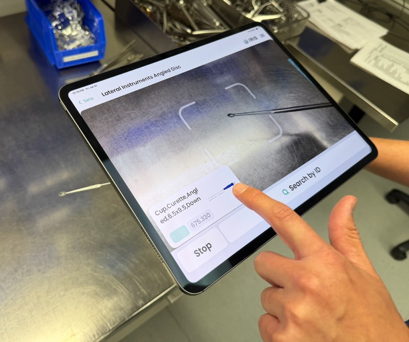
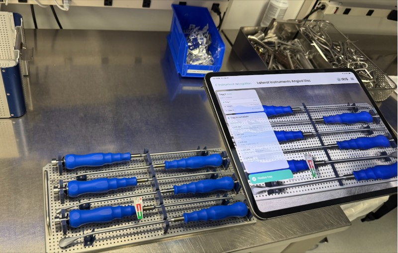

On-device machine learning for surgical sterile processing
IRIS is an app for surgical sterile processing. It uses on-device computer vision models to recognize surgical instruments, give sterilization guidance, and help technicians verify trays before they return to the OR.
I was the lead engineer and tech lead. I designed the architecture and led the engineering team that built it, from the on-device models to the app technicians use at the workstation.
The work began in the hospital. The team spent many hours observing surgery, then shadowed sterile processing leaders and technicians. Prototype sessions with technicians defined the interaction model, physical setup, and product requirements.
Sterile processing departments are fast-moving and crowded, often hot, humid basement spaces with limited wifi. Technicians wear PPE or gloves, handle wet instruments, and move between stations. We designed around device placement, camera angle, responsiveness, and interaction speed at the workstation.

